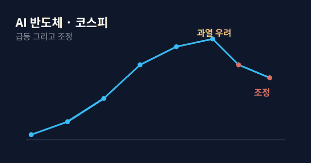

코스피 조정, AI 반도체 거품일까 기회일까

2026년 상반기 내내 증시를 끌고 온 주인공은 단연 AI였습니다. 그런데 최근 코스피가 바로 그 AI 반도체주를 중심으로 조정을 받으면서, 이제 거품이 꺼지는 것 아니냐는 이야기가 여기저기서 나옵니다. 오늘은 지금 시장에서 벌어지는 일을 차분히 짚어보겠습니다.

지금까지의 상승은 진짜였다
먼저 팩트부터. 2026년 6월 수출은 1년 전보다 무려 70.9% 급증했고, 그 중심에 반도체가 있었습니다. AI 서비스가 폭발적으로 늘면서 데이터센터 투자가 커졌고, 데이터센터는 곧 반도체 수요를 의미합니다. 한국의 반도체 기업들이 이 흐름의 직접적인 수혜를 받았습니다. 즉, 지금까지의 주가 상승은 허공에 뜬 게 아니라 실제 실적과 수요가 받쳐준 결과였습니다.
그런데 왜 조정이 왔나
문제는 속도입니다. 시장에서는 기업 가치가 너무 빠르게 올랐다는 우려가 나오고 있습니다. 좋은 이야기가 이미 주가에 다 반영됐다면, 아주 좋은 실적이 나와도 주가는 오히려 빠질 수 있습니다. 기대가 현실을 앞질러 갔을 때 나타나는 전형적인 조정입니다. 여기에 7월 기준금리 인상(2.50%→2.75%)까지 겹쳤습니다. 금리가 오르면 미래의 성장에 값을 매기는 성장주·기술주에는 부담이 커집니다.
거품이냐 기회냐, 판단의 기준
이 질문에 정답을 단정하는 사람은 경계하는 게 좋습니다. 대신 스스로 점검할 기준 몇 가지를 드리겠습니다. 첫째, 실적이 계속 따라오는가. AI 투자와 반도체 수요가 실제 매출·이익으로 이어지는 흐름이 유지된다면, 이번 조정은 과열을 식히는 건강한 쉬어가기일 수 있습니다. 둘째, 나는 얼마나 버틸 수 있는가. 같은 종목이라도 5년을 볼 사람과 다음 달을 볼 사람의 대응은 완전히 달라야 합니다. 셋째, 한 곳에 몰려 있지 않은가. AI·반도체가 좋다고 해서 자산을 한쪽에 다 실으면, 조정이 왔을 때 흔들림도 그만큼 커집니다.
마무리
역사적으로 큰 기술 변화의 초입에는 늘 급등과 조정이 번갈아 나타났습니다. 인터넷도, 스마트폰도 그랬습니다. 중요한 건 방향을 맞히는 게 아니라, 어떤 시나리오가 와도 무너지지 않을 만큼 분산해 두는 것입니다.